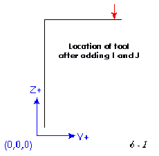
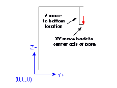
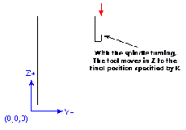

The G87 cycle is intended for back boring.
The situation is that you have a through hole and you want to counter bore the bottom of hole. To do this you put an L-shaped tool in the spindle with a cutting surface on the UPPER side of its base. You stick it carefully through the hole when it is not spinning and is oriented so it fits through the hole, then you move it so the stem of the L is on the axis of the hole, start the spindle, and feed the tool upward to make the counter bore. Then you stop the tool, get it out of the hole, and restart it.
This cycle uses I and J values to indicate the position for inserting and removing the tool. I and J will always be increments from the X position and the Y position, regardless of the distance mode setting. This cycle also uses a K value to specify the position along the Z-axis of the top of counterbore. The K value is an absolute Z-value in absolute distance mode, and an increment (from the Z position) in incremental distance mode.
0. Preliminary motion, as described above.
1. Move at traverse rate parallel to the XY-plane to the point indicated by I and J.
2. Stop the spindle in a specific orientation.
3. Move the Z-axis only at traverse rate downward to the Z position.
4. Move at traverse rate parallel to the XY-plane to the X,Y location.
5. Start the spindle in the direction it was going before.
6. Move the Z-axis only at the given feed rate upward to the position indicated by K.
7. Move the Z-axis only at the given feed rate back down to the Z position.
8. Stop the spindle in the same orientation as before.
9. Move at traverse rate parallel to the XY-plane to the point indicated by I and J.
10. Move the Z-axis only at traverse rate to the clear Z.
11. Move at traverse rate parallel to the XY-plane to the specified X,Y location.
12. Restart the spindle in the direction it was going before.
Example 6 - Backbore
Example six uses a incremental distances from (0, 0, 0) so the preliminary moves look much like those in example five but they are done using the G87 backbore canned cycle.
G91 G87 M3 S1000 X1 Y1 Z-0.4 R1.4 I-0.1 J-0.1 K-0.1
|
You will notice that the preliminary moves shift the tool to directly
above the center axis of the existing bore.
Next it increments that location by the I and J values. I offsets X with a plus value being added to the current X. J does the same for the Y axis. For our example block both I and J are negative so they move back from the hole axis along the path just made by the tool. The amount of offset required should be just enough that the tool tip will slide down through the bore.
|
|

|
|
Next the canned cycle moves the tool down in z and at the bottom location
represented in the block by the Z 0.4 value it moves the tool back
to the center of the bore.
|
|

|
Now the g87 canned cycle turns the spindle on and moves back up into the bore at the programmed feedrate. This is the real cutting action of this canned cycle. With the proper tool in a boring bar this cycle will produce a chamfer on the bottom side of the bore. G87 can also be used to produce a larger diameter bore on the bottom side of the bore.
|
When the tool has reached the K position it is returned to the bottom
location, the spindle is stopped and oriented and follows the earlier
path back out of the bore to the initial position above.
|
|

|
This canned cycle assumes spindle orientation which has not been implemented in the EMC to date. The proper alignment of the tool tip to the oriented spindle is critical to the successful insertion of the tool through the hole to be backbored.